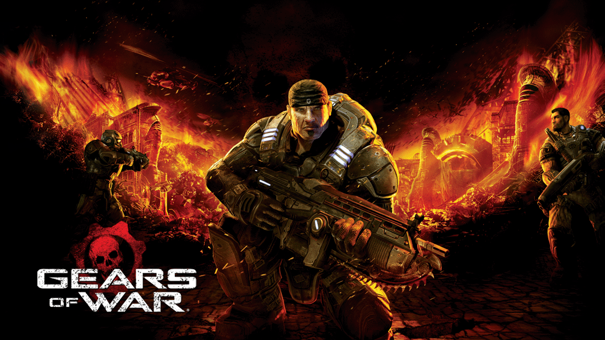

Uno de mis pasatiempos favoritos es jugar videojuegos. En especial disfruto mucho los juegos de acción y disparos.
Mi juego favorito: Gears of War (saga completa)
Gears of War es un videojuego de disparos en tercera persona desarrollado por Epic games y actualmente dirigido por The Coalition y publicado por Xbox Game Studios. Me gusta porque combina una historia épica con un multijugador muy intenso. Lo que más disfruto es jugar con amigos en modo multijugador.
